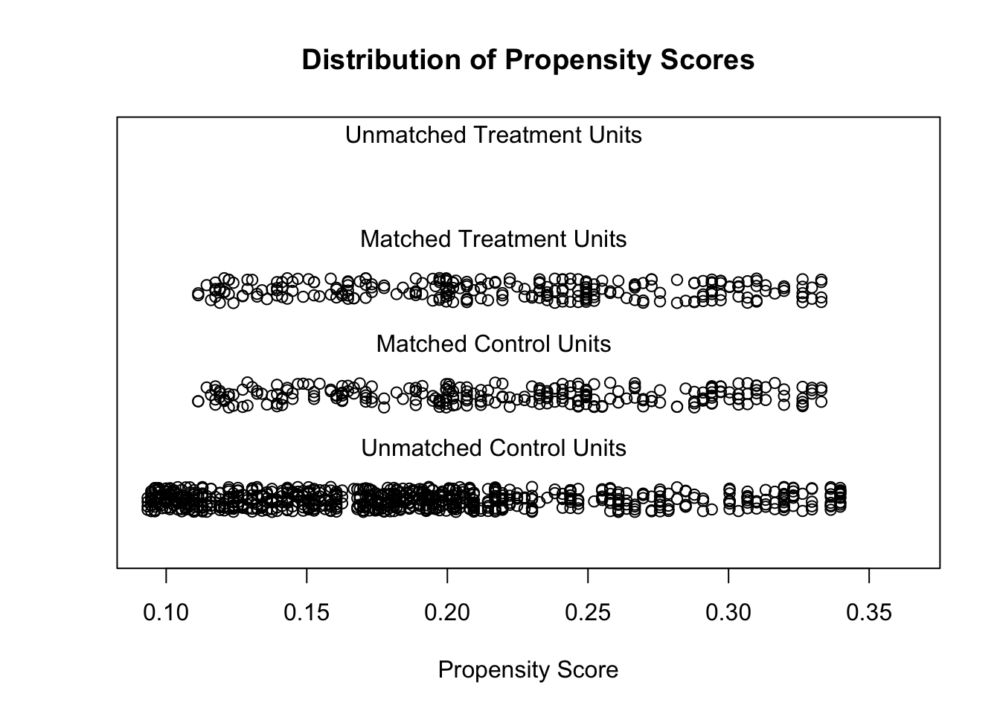
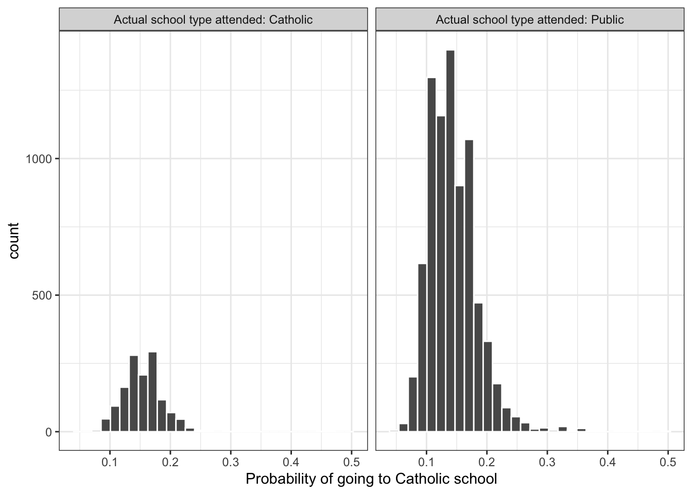
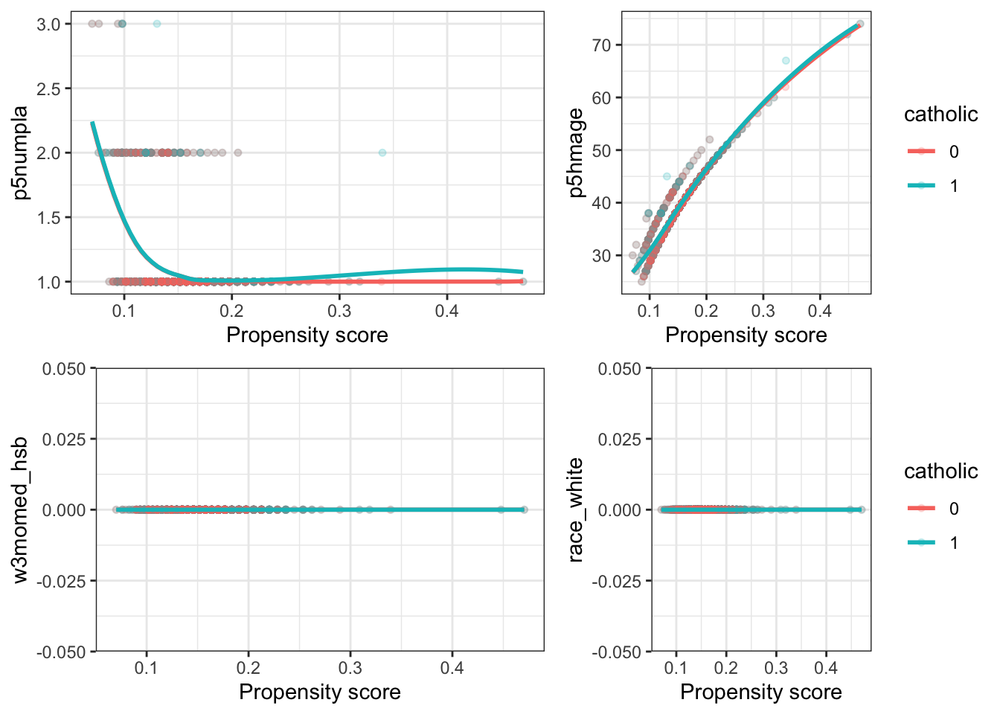

倾向评分匹配算法——R实例学习
王诗翔 · 2018-06-25
分类:
r
标签:
r
propensity
倾向评分算法用于校正模型中的混淆因子，这里我们先使用随机生成的数据学习该算法，然后实际分析一下去教会学校和公共学校上学学生的成绩差异。
本文主要内容来自文末两篇资料，有很多是英文，因为时间关系我就不翻译了，读读英文理解也是很好的锻炼。
学习
According to Wikipedia, propensity score matching (PSM) is a “statistical matching technique that attempts to estimate the effect of a treatment, policy, or other intervention by accounting for the covariates that predict receiving the treatment”. In a broader sense, propensity score analysis assumes that an unbiased comparison between samples can only be made when the subjects of both samples have similar characteristics. Thus, PSM can not only be used as “an alternative method to estimate the effect of receiving treatment when random assignment of treatments to subjects is not feasible” (Thavaneswaran 2008). It can also be used for the comparison of samples in epidemiological studies.
创建两个随机数据框
数据框#1：
library(wakefield)
set.seed(1234)
df.patients <- r_data_frame(n = 250,
age(x = 30:78,
name = 'Age'),
sex(x = c("Male", "Female"),
prob = c(0.70, 0.30),
name = "Sex"))
#> Warning: `tbl_df()` is deprecated as of dplyr 1.0.0.
#> Please use `tibble::as_tibble()` instead.
#> This warning is displayed once every 8 hours.
#> Call `lifecycle::last_warnings()` to see where this warning was generated.
df.patients$Sample <- as.factor('Patients')查看下描述性统计量：
summary(df.patients)
#> Age Sex Sample
#> Min. :30.0 Male :163 Patients:250
#> 1st Qu.:42.0 Female: 87
#> Median :52.0
#> Mean :53.5
#> 3rd Qu.:65.0
#> Max. :78.0the mean age of the patient sample is 53.7 and roughly 70% of the patients are male (69.2%). 数据框#2：
set.seed(1234)
df.population <- r_data_frame(n = 1000,
age(x = 18:80,
name = 'Age'),
sex(x = c("Male", "Female"),
prob = c(0.50, 0.50),
name = "Sex"))
df.population$Sample <- as.factor('Population')上面这个数据框用来模拟总体情况。
summary(df.population)
#> Age Sex Sample
#> Min. :18.0 Male :487 Population:1000
#> 1st Qu.:34.0 Female:513
#> Median :49.0
#> Mean :49.1
#> 3rd Qu.:64.0
#> Max. :80.0融合数据框
mydata <- rbind(df.patients, df.population)
mydata$Group <- as.logical(mydata$Sample == 'Patients')
mydata$Distress <- ifelse(mydata$Sex == 'Male', age(nrow(mydata), x = 0:42, name = 'Distress'),
age(nrow(mydata), x = 15:42, name = 'Distress'))当我们两个样本中比较年龄和性别时会发现差异：
pacman::p_load(tableone)
table1 <- CreateTableOne(vars = c('Age', 'Sex', 'Distress'),
data = mydata,
factorVars = 'Sex',
strata = 'Sample')
table1 <- print(table1,
printToggle = FALSE,
noSpaces = TRUE)
knitr::kable(table1[,1:3],
align = 'c',
caption = 'Comparison of unmatched samples')| Patients | Population | p | |
|---|---|---|---|
| n | 250 | 1000 | |
| Age (mean (SD)) | 53.51 (13.86) | 49.06 (17.77) | <0.001 |
| Sex = Female (%) | 87 (34.8) | 513 (51.3) | <0.001 |
| Distress (mean (SD)) | 23.53 (11.94) | 25.44 (10.97) | 0.015 |
在总体中，distress更高。
匹配样本
Now that we have completed preparation and inspection of data, we are going to match the two samples using the matchit-function of the MatchIt package. The method command method=“nearest” specifies that the nearest neighbors method will be used. Other matching methods are exact matching, subclassification, optimal matching, genetic matching, and full matching (method = c(“exact”, “subclass”, “optimal”, "“genetic”, “full”)). The ratio command ratio = 1 indicates a one-to-one matching approach. With regard to our example, for each case in the patient sample exactly one case in the population sample will be matched. Please also note that the Group variable needs to be logic (TRUE vs. FALSE).
library(MatchIt)
set.seed(1234)
match.it <- matchit(Group ~ Age + Sex, data = mydata, method="nearest", ratio=1)
a <- summary(match.it)For further data presentation, we save the output of the summary-function into a variable named a. After matching the samples, the size of the population sample was reduced to the size of the patient sample (n=250; see table 2).
knitr::kable(a$nn, digits = 2, align = 'c',
caption = 'Sample sizes')| Control | Treated | |
|---|---|---|
| All | 1000 | 250 |
| Matched | 250 | 250 |
| Unmatched | 750 | 0 |
| Discarded | 0 | 0 |
The following output shows, that the distributions of the variables Age and Sex are nearly identical after matching.
knitr::kable(a$sum.matched[c(1,2,4)], digits = 2, align = 'c',
caption = 'Summary of balance for matched data')| Means Treated | Means Control | Mean Diff | |
|---|---|---|---|
| distance | 0.22 | 0.22 | 0.00 |
| Age | 53.51 | 53.47 | 0.04 |
| SexMale | 0.65 | 0.65 | 0.00 |
| SexFemale | 0.35 | 0.35 | 0.00 |
The distributions of propensity scores can be visualized using the plot-function which is part of the MatchIt package .
plot(match.it, type = 'jitter', interactive = FALSE)
保存匹配样本
df.match <- match.data(match.it)[1:ncol(mydata)]
rm(df.patients, df.population)Eventually, we can check whether the differences in the level of distress between both samples are still significant.
pacman::p_load(tableone)
table4 <- CreateTableOne(vars = c('Age', 'Sex', 'Distress'),
data = df.match,
factorVars = 'Sex',
strata = 'Sample')
table4 <- print(table4,
printToggle = FALSE,
noSpaces = TRUE)
knitr::kable(table4[,1:3],
align = 'c',
caption = 'Table 4: Comparison of matched samples')| Patients | Population | p | |
|---|---|---|---|
| n | 250 | 250 | |
| Age (mean (SD)) | 53.51 (13.86) | 53.47 (13.85) | 0.974 |
| Sex = Female (%) | 87 (34.8) | 87 (34.8) | 1.000 |
| Distress (mean (SD)) | 23.53 (11.94) | 23.68 (11.85) | 0.884 |
With a p-value of 0.222, Student’s t-test does not indicate significant differences anymore. Thus, PSM helped to avoid an alpha mistake.
实例
在学习实例之前，导入分析需要用的包：
library(dplyr)
#>
#> Attaching package: 'dplyr'
#> The following object is masked from 'package:wakefield':
#>
#> id
#> The following objects are masked from 'package:stats':
#>
#> filter, lag
#> The following objects are masked from 'package:base':
#>
#> intersect, setdiff, setequal, union
library(ggplot2)
library(MatchIt)导入数据：
ecls = read.csv("../../../static/datasets/ecls.csv")使用非匹配数据进行预分析
ecls %>%
group_by(catholic) %>%
summarise(n_students = n(),
mean_math = mean(c5r2mtsc_std),
std_error = sd(c5r2mtsc_std) / sqrt(n_students))
#> `summarise()` ungrouping output (override with `.groups` argument)
#> # A tibble: 2 x 4
#> catholic n_students mean_math std_error
#> <int> <int> <dbl> <dbl>
#> 1 0 9568 -0.0306 0.0104
#> 2 1 1510 0.194 0.0224ecls %>%
mutate(test = (c5r2mtsc - mean(c5r2mtsc)) / sd(c5r2mtsc)) %>% #this is how the math score is standardized
group_by(catholic) %>%
summarise(mean_math = mean(test))
#> `summarise()` ungrouping output (override with `.groups` argument)
#> # A tibble: 2 x 2
#> catholic mean_math
#> <int> <dbl>
#> 1 0 -0.0306
#> 2 1 0.194检验差异：
with(ecls, t.test(c5r2mtsc_std ~ catholic))
#>
#> Welch Two Sample t-test
#>
#> data: c5r2mtsc_std by catholic
#> t = -9, df = 2215, p-value <2e-16
#> alternative hypothesis: true difference in means is not equal to 0
#> 95 percent confidence interval:
#> -0.273 -0.176
#> sample estimates:
#> mean in group 0 mean in group 1
#> -0.0306 0.1939协变量探索
We’ll work with the following covariates for now:
- race_white: Is the student white (1) or not (0)?
- p5hmage: Mother’s age
- w3income: Family income
- p5numpla: Number of places the student has lived for at least 4 months
- w3momed_hsb: Is the mother’s education level high-school or below (1) or some college or more (0)?
Let’s calculate the mean for each covariate by the treatment status:
ecls_cov <- c('race_white', 'p5hmage', 'p5numpla', 'w3momed_hsb')
ecls %>%
group_by(catholic) %>%
select(one_of(ecls_cov)) %>%
summarise_all(funs(mean(., na.rm = T)))
#> Adding missing grouping variables: `catholic`
#> Warning: `funs()` is deprecated as of dplyr 0.8.0.
#> Please use a list of either functions or lambdas:
#>
#> # Simple named list:
#> list(mean = mean, median = median)
#>
#> # Auto named with `tibble::lst()`:
#> tibble::lst(mean, median)
#>
#> # Using lambdas
#> list(~ mean(., trim = .2), ~ median(., na.rm = TRUE))
#> This warning is displayed once every 8 hours.
#> Call `lifecycle::last_warnings()` to see where this warning was generated.
#> # A tibble: 2 x 5
#> catholic race_white p5hmage p5numpla w3momed_hsb
#> <int> <dbl> <dbl> <dbl> <dbl>
#> 1 0 0 37.6 1.13 0
#> 2 1 0 39.6 1.09 0检验：
lapply(ecls_cov, function(v) {
t.test(ecls[, v] ~ ecls[, 'catholic'])
})
#> [[1]]
#>
#> Welch Two Sample t-test
#>
#> data: ecls[, v] by ecls[, "catholic"]
#> t = NaN, df = NaN, p-value = NA
#> alternative hypothesis: true difference in means is not equal to 0
#> 95 percent confidence interval:
#> NaN NaN
#> sample estimates:
#> mean in group 0 mean in group 1
#> 0 0
#>
#>
#> [[2]]
#>
#> Welch Two Sample t-test
#>
#> data: ecls[, v] by ecls[, "catholic"]
#> t = -13, df = 2187, p-value <2e-16
#> alternative hypothesis: true difference in means is not equal to 0
#> 95 percent confidence interval:
#> -2.33 -1.70
#> sample estimates:
#> mean in group 0 mean in group 1
#> 37.6 39.6
#>
#>
#> [[3]]
#>
#> Welch Two Sample t-test
#>
#> data: ecls[, v] by ecls[, "catholic"]
#> t = 4, df = 2234, p-value = 2e-05
#> alternative hypothesis: true difference in means is not equal to 0
#> 95 percent confidence interval:
#> 0.0215 0.0584
#> sample estimates:
#> mean in group 0 mean in group 1
#> 1.13 1.09
#>
#>
#> [[4]]
#>
#> Welch Two Sample t-test
#>
#> data: ecls[, v] by ecls[, "catholic"]
#> t = NaN, df = NaN, p-value = NA
#> alternative hypothesis: true difference in means is not equal to 0
#> 95 percent confidence interval:
#> NaN NaN
#> sample estimates:
#> mean in group 0 mean in group 1
#> 0 0倾向分估计
m_ps <- glm(catholic ~ race_white + p5hmage + p5numpla + w3momed_hsb,
family = binomial(), data = ecls)
summary(m_ps)
#>
#> Call:
#> glm(formula = catholic ~ race_white + p5hmage + p5numpla + w3momed_hsb,
#> family = binomial(), data = ecls)
#>
#> Deviance Residuals:
#> Min 1Q Median 3Q Max
#> -1.166 -0.587 -0.528 -0.463 2.305
#>
#> Coefficients: (2 not defined because of singularities)
#> Estimate Std. Error z value Pr(>|z|)
#> (Intercept) -3.28365 0.20921 -15.70 <2e-16 ***
#> race_white NA NA NA NA
#> p5hmage 0.04582 0.00444 10.33 <2e-16 ***
#> p5numpla -0.22521 0.09059 -2.49 0.013 *
#> w3momed_hsb NA NA NA NA
#> ---
#> Signif. codes: 0 '***' 0.001 '**' 0.01 '*' 0.05 '.' 0.1 ' ' 1
#>
#> (Dispersion parameter for binomial family taken to be 1)
#>
#> Null deviance: 7701.3 on 9266 degrees of freedom
#> Residual deviance: 7583.5 on 9264 degrees of freedom
#> (1811 observations deleted due to missingness)
#> AIC: 7589
#>
#> Number of Fisher Scoring iterations: 4prs_df <- data.frame(pr_score = predict(m_ps, type = "response"),
catholic = m_ps$model$catholic)
head(prs_df)
#> pr_score catholic
#> 1 0.205 0
#> 2 0.164 0
#> 4 0.177 0
#> 5 0.146 1
#> 6 0.205 0
#> 7 0.106 0
labs <- paste("Actual school type attended:", c("Catholic", "Public"))
prs_df %>%
mutate(catholic = ifelse(catholic == 1, labs[1], labs[2])) %>%
ggplot(aes(x = pr_score)) +
geom_histogram(color = "white") +
facet_wrap(~catholic) +
xlab("Probability of going to Catholic school") +
theme_bw()
#> `stat_bin()` using `bins = 30`. Pick better value with `binwidth`.
执行匹配算法
ecls_nomiss <- ecls %>% # MatchIt does not allow missing values
select(c5r2mtsc_std, catholic, one_of(ecls_cov)) %>%
na.omit()
mod_match <- matchit(catholic ~ race_white + p5hmage + p5numpla + w3momed_hsb,
method = "nearest", data = ecls_nomiss)dta_m <- match.data(mod_match)
dim(dta_m)
#> [1] 2704 8检查匹配样本中协变量的平衡
fn_bal <- function(dta, variable) {
dta$variable <- dta[, variable]
if (variable == 'w3income') dta$variable <- dta$variable / 10^3
dta$catholic <- as.factor(dta$catholic)
support <- c(min(dta$variable), max(dta$variable))
ggplot(dta, aes(x = distance, y = variable, color = catholic)) +
geom_point(alpha = 0.2, size = 1.3) +
geom_smooth(method = "loess", se = F) +
xlab("Propensity score") +
ylab(variable) +
theme_bw() +
ylim(support)
}
library(gridExtra)
#>
#> Attaching package: 'gridExtra'
#> The following object is masked from 'package:dplyr':
#>
#> combine
grid.arrange(
fn_bal(dta_m, "p5numpla") + theme(legend.position = "none"),
fn_bal(dta_m, "p5hmage"),
fn_bal(dta_m, "w3momed_hsb") + theme(legend.position = "none"),
fn_bal(dta_m, "race_white"),
nrow = 2, widths = c(1, 0.8)
)
#> `geom_smooth()` using formula 'y ~ x'
#> Warning: Removed 41 rows containing missing values (geom_smooth).
#> `geom_smooth()` using formula 'y ~ x'
#> Warning: Removed 1 rows containing missing values (geom_smooth).
#> `geom_smooth()` using formula 'y ~ x'
#> `geom_smooth()` using formula 'y ~ x'
均值差异
dta_m %>%
group_by(catholic) %>%
select(one_of(ecls_cov)) %>%
summarise_all(funs(mean))
#> Adding missing grouping variables: `catholic`
#> # A tibble: 2 x 5
#> catholic race_white p5hmage p5numpla w3momed_hsb
#> <int> <dbl> <dbl> <dbl> <dbl>
#> 1 0 0 39.6 1.09 0
#> 2 1 0 39.6 1.09 0检验：
lapply(ecls_cov, function(v) {
t.test(dta_m[, v] ~ dta_m$catholic)
})
#> [[1]]
#>
#> Welch Two Sample t-test
#>
#> data: dta_m[, v] by dta_m$catholic
#> t = NaN, df = NaN, p-value = NA
#> alternative hypothesis: true difference in means is not equal to 0
#> 95 percent confidence interval:
#> NaN NaN
#> sample estimates:
#> mean in group 0 mean in group 1
#> 0 0
#>
#>
#> [[2]]
#>
#> Welch Two Sample t-test
#>
#> data: dta_m[, v] by dta_m$catholic
#> t = -0.06, df = 2702, p-value = 1
#> alternative hypothesis: true difference in means is not equal to 0
#> 95 percent confidence interval:
#> -0.405 0.383
#> sample estimates:
#> mean in group 0 mean in group 1
#> 39.6 39.6
#>
#>
#> [[3]]
#>
#> Welch Two Sample t-test
#>
#> data: dta_m[, v] by dta_m$catholic
#> t = -0.2, df = 2700, p-value = 0.8
#> alternative hypothesis: true difference in means is not equal to 0
#> 95 percent confidence interval:
#> -0.0250 0.0206
#> sample estimates:
#> mean in group 0 mean in group 1
#> 1.09 1.09
#>
#>
#> [[4]]
#>
#> Welch Two Sample t-test
#>
#> data: dta_m[, v] by dta_m$catholic
#> t = NaN, df = NaN, p-value = NA
#> alternative hypothesis: true difference in means is not equal to 0
#> 95 percent confidence interval:
#> NaN NaN
#> sample estimates:
#> mean in group 0 mean in group 1
#> 0 0Average absolute standardized difference
As a measure of the average imbalance, we can calculate the following:
\[\bar{\left|\frac{\beta}{\sigma}\right|} = \frac{1}{k}\sum_x \frac{|\beta_x|}{\sigma_x}\]
where βx is the difference between the covariate means in the treated and control groups in the matched sample. An average absolute standardized difference that is close to 0 is preferable, since that indicates small differences between the control and treatment groups in the matched sample.
Try to implement a function that calculates the absolute standardized difference for any covariate in the matched sample. Then take the average for all the covariates.
评估治疗效应
Estimating the treatment effect is simple once we have a matched sample that we are happy with. We can use a t-test，Or we can use OLS with or without covariates。
资料来源：